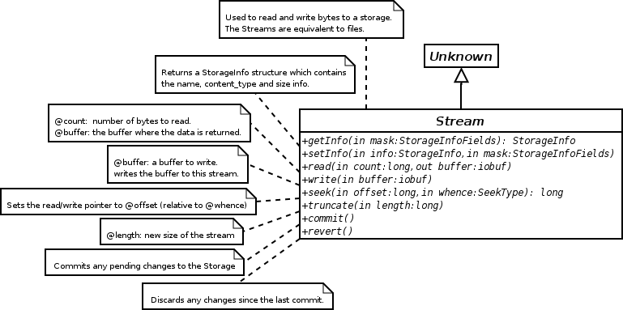
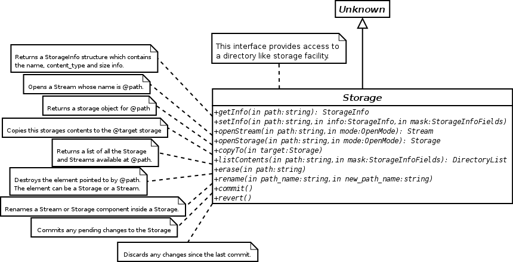

Libbonobo Reference Manual
Storages and Streams
bonobo-storage-memory
BonoboStreamMem
— In-memory implementation of Bonobo::Stream interface.
bonobo-storage
— Abstract implementation of the Bonobo::Storage interface
bonobo-stream-client
— Simplified client wrapper functions for the Stream interface
Figure 3. The Bonobo::Stream interface

Figure 4. The Bonobo::Storage interface
